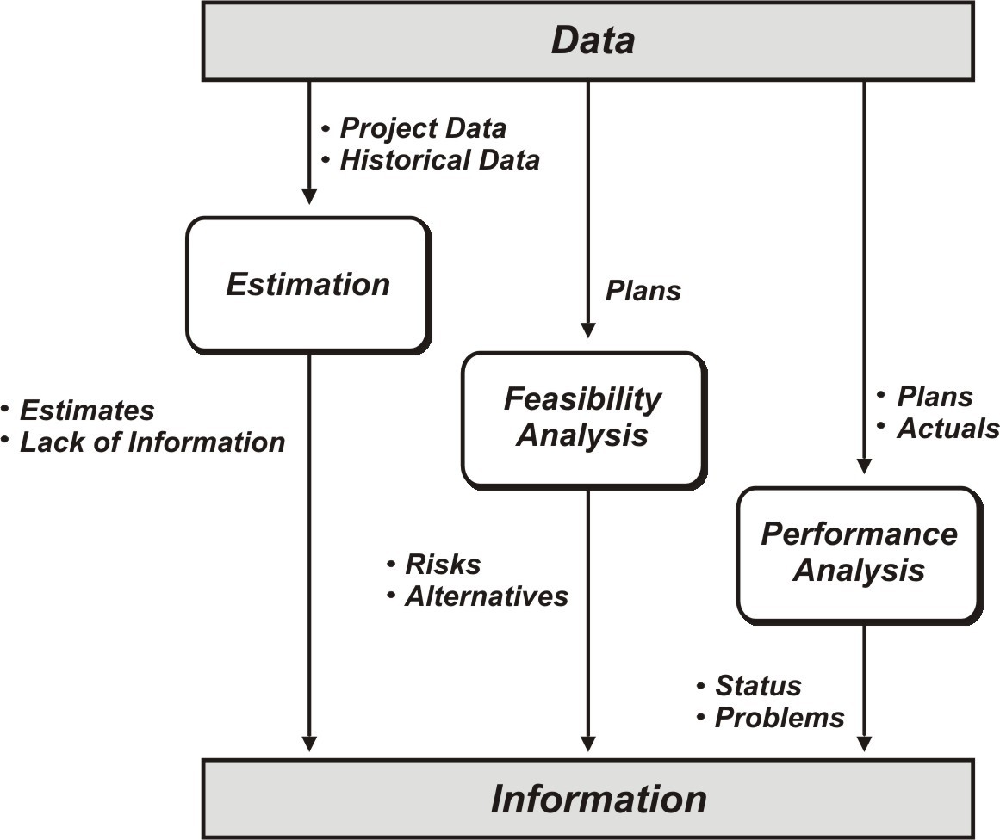
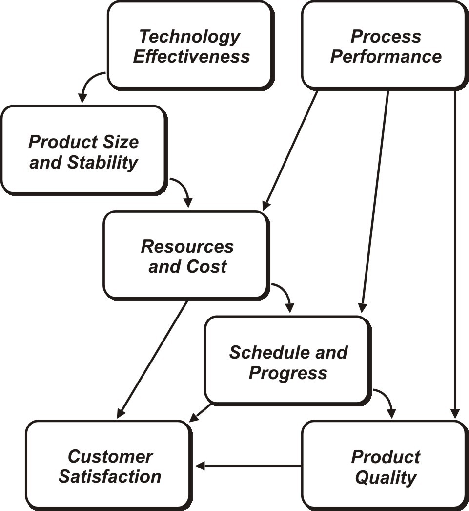
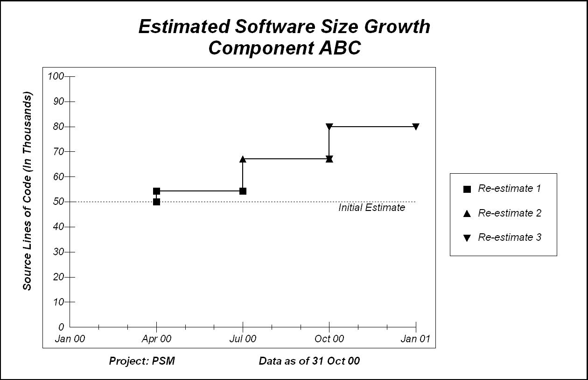

|
Purpose
|
-
To execute data analysis procedures defined in the Measurement Plan (PSM).
-
To transform base measures into indicators that can be used for analysis.
|
The principal task of the Perform Measurement activity is to analyze data. This is where much of the project's
measurement effort will be focused. This task transforms values of base measures to produce values for indicators, the
basic building blocks of analysis. Indicators and associated decision criteria are used to make planning decisions or
determine the need for corrective action once the project has started. These analyses are performed by executing the
data analysis procedures defined in the measurement plan. However, since all information needs and management questions
cannot be anticipated during planning, the data analysis procedure must also provide for an ad-hoc analysis component.
The following shows the three types of analysis typically employed to support project management decisions. Each type
of analysis relies on unique measurement techniques, has its own inputs, and produces different types of results. The
focus of analysis always changes over the course of a project, and for most projects, all three types usually must be
addressed

Three Types of Analysis
Early in the software project, and when plans are updated, the focus is on estimation to support project
planning. Estimation establishes target values for work product size, project effort, project schedules, and other key
objectives. Estimation usually starts with historical data and assumptions about the project's process and products.
Estimation also identifies uncertainties that feed back into the issue identification activity. Estimation should be
conducted during the initial project-planning phase and whenever replans are undertaken.
As project planning nears completion, the focus shifts to feasibility analysis. This type of analysis determines
whether project plans and targets are realistic and achievable. Feasibility analysis uses historical data, experience,
and consistency checks to evaluate the project plans. It also helps to define the interdependencies between the key
planning parameters related to product capability, cost, and schedule. Risks identified during this stage should be
incorporated into the project's risk management process. Feasibility analysis should also be conducted during the
initial project-planning phase and during all subsequent replans.
Once the project has begun, performance analysis determines whether the project is meeting defined plans,
assumptions, and targets. Inputs include plan and actual performance data. Performance analysis is designed to identify
risks, problems, and corrective actions. Performance analysis should be conducted on a regular basis throughout the
project's life cycle.
The Perform Measurement (PSM) activity provides more guidance on the
specific measurement techniques used in these three different types of analysis.
Indicator Generation
Indicators are combinations of base and/or derived measures and predefined decision or evaluation criteria. The Plan Measurement (PSM) activity explained that an initial set of
indicators is designed during the measurement planning activity to support identified information needs. This section
examines the details of indicator generation as part of the analysis process.
Few information needs can be addressed by collecting only "current" or actual performance data. Actual data must be
compared with an expectation of what it should be. That expectation may be expressed in "planned" values,
historical averages, derived limits, or thresholds. These "expected" values usually become one of the base measures in
an indicator. In addition, predefined decision criteria is used to decide whether or not the difference between actual
data and expected data is significant.
The following figure provides an example of the indicator of coding progress.

Indicator Example
On most projects, information needs evolve rapidly. While the measurement plan may contain a set of predefined
indicators designed to provide insight into known information needs, the project's measurement process should allow for
the dynamic generation of indicators to help investigate problems as they arise. Because base and derived measures can
be combined in many different ways, various indicators can be constructed from the same set of measures. This allows
tremendous flexibility in addressing information needs and analyzing issues and in adapting to changing information
requirements. A measurement process that is based only on the periodic delivery of a static set of indicators does not
have the flexibility to address changing project information needs.
Indicators are often best displayed graphically rather than as a table of numbers. Graphs make trends in data,
variances, and relationships more obvious and easier to interpret. Many simple charting techniques can be used to
produce graphical representations of measurement data. The ability to extract the pertinent information contained in
the measurement data can be improved with proper selection and use of these charting techniques.
Well-designed graphs facilitate communication of measurement results. Graphs should not be complex. They should convey
a clear message. It is better to have multiple graphs, rather than having numerous messages on one graph.
The Integrated Analysis Model
So far in this activity, the focus has been on the generation of a single indicator to provide insight into a project
information need. It is important to note that the information categories common to software projects are not
independent of one another. For example, most project managers know that unplanned staff turnover or personnel
unavailability will most likely impact schedule and progress. "Scope creep" is known to result in a need for more
resources and schedule than planned. Problems with product quality can cause cost and schedule overruns when sufficient
rework effort has not been accounted for in schedules and budgets.
The Integrated Analysis Model in the following figure shows the relationships between information categories. This
model helps build "early warning" capabilities into the measurement process, and helps to relate project information
needs and issues in terms of cause and effect.

Integrated Analysis Model
Each of the arrows in the figure represents a relationship. For example, as Product Size and Stability changes, so do
project Resources and Cost. Each of the common information categories is related to its neighbor in the integrated
analysis model. This means that "upstream" issues can serve as "leading" indicators of problems with downstream issues.
Upstream issues can also be investigated to uncover the root cause of a current problem. For example, if
schedules are beginning to slip and/or progress is slowing, effort or size might be investigated as the cause of the
schedule problem. Moreover, proactively monitoring effort and size measures can serve as an "early warning system" for
schedule issues. Early identification of an unplanned size increase can be used to support management decision-making
such as adding more people to the project or asking for a schedule extension before the project is in jeopardy of
missing key dates.
The following example shows the use of the Integrated Analysis Model. Two areas of concern for this particular project
were the uncertainty of software requirements and ability to meet cost and schedule commitments. This figure shows how
the estimated size of a pertinent software component has grown since the initial estimate.

Software Size Growth
The Integrated Analysis Model shows that size growth is a leading indicator of a projected increase in development
effort (and cost), which, in turn, has the potential to impact project schedules.
The next figure shows the variance to date between planned and actual effort for this project. Although the applied
effort was originally tracking close to plan, indications of the size growth problem are starting to become visible.
The planned effort probably has not been revised to reflect the re-estimate of size depicted in the previous figure.
This is critical, given its downstream impact on cost and schedule.

Software Effort
The size growth indicator can also be used to help predict the amount of expected additional effort that will be
required. Using the estimator depicted in following figure, the amount of size growth is used to define a new
plan for total project effort.

Software Size Used to Re-estimate Development Effort
This example shows how the Integrated Analysis Model can be used as a tool for solving problems, projecting or
predicting outcomes, and formulating recommendations. It also illustrates that the analysis process and the generation
of indicators are dynamic. Indicators may change and evolve over time to answer different, but related, questions, and
to provide different views of the measurement results. Each information need may require applying a different set of
analysis techniques in order to isolate, understand, and facilitate resolution of a problem, or to better understand
and mitigate a risk. As project problems, risks, and information change, the types of analyses performed and the
indicators generated must be revised.
The Integrated Analysis Model applies equally to estimation, feasibility analysis, and performance analysis.
|